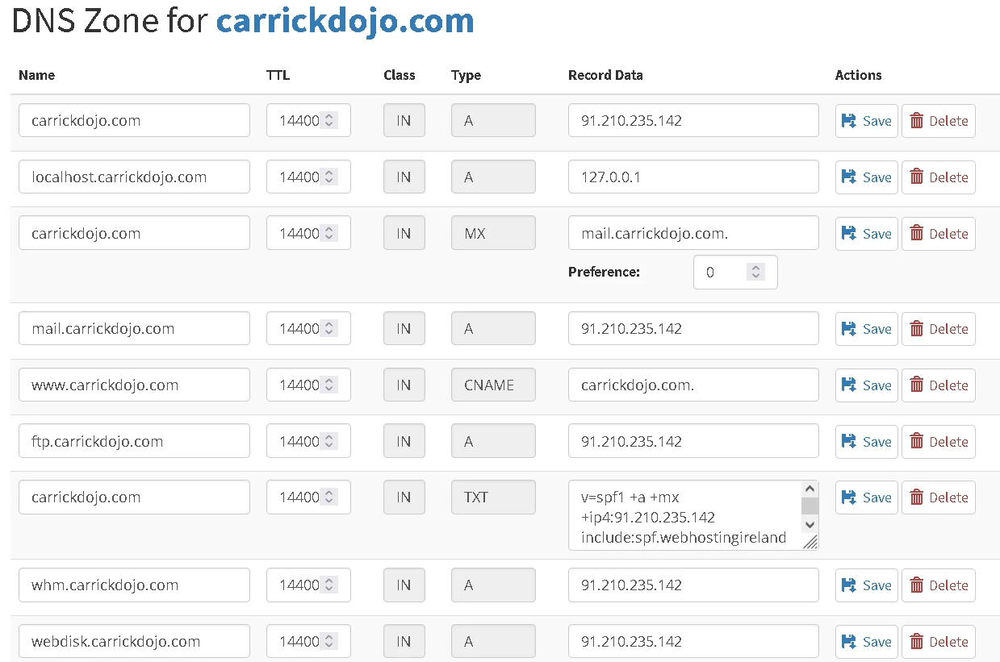

A New Carrick Dojo Website
Project Background
This is a very big project to rebuild the CarrickDojo website.

With our website's 10 year birthday coming this year. We are looking to move away from Wordpress for our website, and create a new site based on the Raspberry Pi Web Design Projects that can be administered by the Ninjas directly.
There is a wealth of amazing resources from CoderDojo and the Raspberry Pi projects pages on web design. We hope to create a site that builds on them, and provides some additional information on how and why we host our site.
The code behind the websites we view was generated by a computer. By writing the CarrickDojo.com in clean HTML and CSS, Ninja's can inspect the pages and follow the code.
At the moment this is just a big overview of our website, however making a step-by-step guide to our website is a goal!
Project Goals
- Redevelop the website in HTML and CSS to better align with the Raspberry Pi Web Design projects.
- Ensure best practices with a child-first led approach to data and accessibility.
- Design the website with a similar style to the CoderDojo foundation website.
- Document the website development and maintenance from first-principles with the aim of Ninja's being able to get further involved.

The Web and HTML
The World Wide Web
Our website is for sharing information with anyone who wants to know more about what we are and what we do.
Before we jump into creating a web site, we need to know a little bit about what web sites are, why they were created like they are and how can people make their own webs pages.

Why did we need webpages?
In the late 1980's lots of people where sharing their work with each other by sending text files over the Internet. They wanted a way to share files that could link (hyperlinks) to other peoples files.
The World Wide Web was developed at CERN (The European Organization for Nuclear Research) by Tim Berners-Lee and his team between 1989-1991. In the proposal, Tim lays out the need and the benefits of linked information systems and hypertext. His idea of "a web of notes with links (like references) between them".
How do webpages work?
There are four keys parts to the world wide web.
- The browser - this is software for our computers for viewing webpages. For me this is Firefox (Brave, Chrome, Edge, Safari and Opera and all browsers)
- The web pages - these are the HTML (Hypertext Markup Language) files we create for our websites containing the information we want to share (you are currently visiting the HTML page called project-website.html)
- The server - the server is where we put our webpages (this website is using a Vercel server with more detail in the hosting section)
- The web protocol - a protocol is a set of rules to follow. The HyperText Transfer Protocol is a set of rules used by browsers and web servers to communicate and transfer the HTML pages over the Internet (this website uses HTTPS a secure HTTP connection)
The World Wide Web was originally created for use within CERN, however they realised other people would pay to use it. CERN licenced the World Wide Web for the first few years competing with other linked information systems. In April 1993, CERN released the World Wide Web into the public domain. Thousands of websites popped up within a year.
- The first ever website went live in August, 1991
- The milestone of 1 billion websites was reached in September 2014
- There were around 1.2 billion websites at the end of 2023
- There were around 200 million active websites at the end of 2023 (about 4/5 of websites are inactive)
- Approximately 150,000 new websites are created everyday
The Web is an essential part of the modern world and everyday, the majority of people in the world use it. When developing websites, learning the history helps us to understand why things are as they are. The original idea of the web never considered using images (and definitely not video); over the last three decades, countless people have extended the Web beyond anything that was originally considered.
Creating HTML Files
HTML is a simple, plain text file written in a particular way (syntax) that has a file extension (the last bit of the file name after the last dot) of HTML.
HTML is a very forgiving. This means, if you make a mistake with the HTML syntax, the browser will still try and display the content. This makes it easier for people new to computers to get started.
Every computer can create plain text files, and we can create web pages in any text editor; however there are tools that make web development easier and more accurate.
Code Editors
There are multiple tools for creating HTML pages online. Many of the older Raspberry Pi Web Design projects used Trinket; however a newer tool has recently been launched. This is a great tool for getting started and is used in newer projects.
A code editor is a piece of software used by a programmers for writing code. They generally contain lots of different tools and features for checking for code mistakes and making writing code faster.
For working on websites, my preference is Visual Studio Code, a free, open source, and cross-platform code editor created by Microsoft.
Anyone can write an extension (extra code and functionality) for Visual Studio Code and there are lots of really useful tools written by other programmers.
- Live Server - this allows us to quickly create a webserver on our computer so we can test our code.
- Github Integration - we can share our code with the rest of our team easily (full details in the Git section)
- Prettier - makes our code look nice with different colours for elements and tags.
Creating CSS Files
Just like HTML, CSS is a simple, plain text file written in a particular way (syntax) that has a file extension (the last bit of the file name after the last dot) of CSS.
All our content goes in the HTML page and we use HTML tags to layout it out on our page. For example, this paragraph is written within our HTML file.
CSS is used apply style to the content in our HTML files.
Designing Our Site
Planning Phase
The most important part of any project is the planning and design part.
For this project we are going to take the content from our existing website and incorporate the styles and branding of the CoderDojo foundation.
Picking Fonts and Colours
Picking colours and fonts is fun but there is a lot to consider. We need to choose colours and fonts that allow us to easily read text.
The CoderDojo Style Guide gives us lots of useful information on the CoderDojo Colour Palette , the logo and the different fonts used by the foundation when creating content.
Setting Our Site Variables
Using these colours, we can create CSS variables for our the colours so we will use on all our pages.
We have placed the fonts we would like to use in our fonts folder and set up the CSS font weighting (how bold it is).

Our Site Layout
Responsive Design
When we make a website, we need to think about how our content will look for the user on their device.
For our site, we need to make sure our site looks good for people on small screens (like mobile phones) and for people with big screens (laptops and desktop computer monitors).
Working With Different Screen Sizes
For our site, we are going to use two separate CSS files depending on if the user is on a big screen or a small screen.
In our default.css file; we tell the browser to load a large screen css file if the minimum width is 768 pixels; or a small screen css file if the maximum width the browser has is 480 pixels.
These files will have the navigation and footer elements that are specific to big screens and little screens.
Our Layout
On a big screen we want the user to have buttons for all our main pages in the navigation, however on small screens there is not enough space for this.
On small screen, we have a hamburger button, and when this is clicked, they will see the links to our pages.
The main content uses a wrapper, to rearrange the content for big and small screens.
The footer can be spread out on a big screen, but on a small screen we want the links in a column.
The Main Section
When creating a new site, we can copy everything from one of the other pages and then replace everything within the "main" section with our new content.
We will need to make two changes to the navigation. We need to set our "active" class on the main nav and the mobile nav.
We have a few limitations as our site is HTML and CSS; and we will need to copy the layout code (the navigation and footer) into each page we create.
Our Folder Layout (folder structure)
We have all our individual html pages at the root of our website project and folders for the fonts, css and images.
We have tried to follow the same folder structure and naming conventions as used on the newer Raspberry Pi Web Design Projects.
Collaboration and Git
What is Git?
Git is a system designed to help people collaborate (work together) on shared files and code.
Git is a version control system. This means if someone changes a file it records the differences between the new version and the old version, and maintains a history.
A Git Repository (a repo) is folder or collection of files that are being tracked with Git. All the files HTML and CSS files for this website are in our Website Git Repository on Github.
Linus Torvalds started developing Git for all the people working on the Linux kernel code. The Linux kernel has over 80 million lines of code and everyday an average 10,000 lines get added to the codebase [Feb 2024].
Every two or three months, all the changes made by the thousands of people working on the Linux kernel are merged together and a new Linux kernel is released. Linus is the only person who can merge patches into the mainline Linux kernel repository.
Git is free and open source. It is shared for everyone in the world to use (and modify if they want).
Git Hosting
There are lots of companies that provide storage for Git repositories on the Internet. As Git is free and open source, we can easily move Git repositories from one server to another; however there are a few things we need to think about before signing up to any Internet service.
- What exactly are we looking for?
- Is it easy to learn about and are there guides and documents?
- Is the service is Europe?
- Do we need a credit card or phone?
- Is the service one we trust and know about?
- Have we checked the Internet for reviews and recommendations?
We are looking for a place to store our Website Git repository, that all the people in the Dojo working on the website will be able to access.
There are lots of Git hosting services out there; the biggest three are: Github, Bitbucket and Gitlab.

Our Website Git Repository
Github is the largest and most used. It was bought by Microsoft in 2018 for $7.5 Billion.
We have decided to use Github for hosting our Git repository.
Github is a site that was designed to share code and a great place to showcase projects you are proud of.
Be very careful of what you share and comment as Github is very a closely tracked site.
Licencing Code
When sharing code, one of the questions will be on the type of licence. Software licensing is very complex and always changing because every country have their own rules.
As our Website is something that might help other Ninjas, Dojos or people making websites; we are going to share the code with everyone and allow anyone to use and make changes to suit them.
We are going to use the Creative Commons license for the project. This means everyone can share, copy and use are code; but no one should start charging money if they do copy some of it.
Our Website Hosting
Every website needs a server for hosting and there are lots of things to consider with web hosting.
Websites often serve dynamic content, this means
they are two-way, where the user sends information to the
web server and gets specific content back (think using a
search engine).
Our site is HTML and CSS and considered static;
this makes it remarkably easy to host.
Website Hosting Considerations
- Traffic - we are probably not going to have a huge amount of people visiting our site at once.
- Security - we need to make sure the connection of our webserver is secure, this means we need to use https and not just http.
- Administration - this means looking after the hosting for as long as it is up. As we are all volunteers, we need to make sure our hosting is well documented and has instructions that anyone can follow.
- Costs - there are lots of free options for hosting static websites, additionally as a not-for-profit organisation, many of the large technology companies are happy to provide us free resources.
- Location - we want to make sure our website is hosted in the European Union as there are lots of rules about moving data outside of the EU. Luckily, Ireland hosts all the major cloud companies and has lots of little service providers.
Our Website Hosting
For the development of the site, we have decided to use Vercel. Vercel are the developers of Next.Js and provide a very good free tier offering that does not require a credit card.

-
Key reasons for going with Vercel:
- The free tier hobby account should meet our traffic needs.
- Integration with Github - when we update our Website Git Repo, Vercel will see the changes, and deploy a new version of our site.
- Following Domain Verification, HTTPS is automatic.
Domain Names
Our Domain Name
Our domain name is carrickdojo.com; our first Dojo Champion registered the domain on Friday 21st of November 2014.
Domain names provide us a way to create helpful names for Internet resources so we can easily remember them.
It is a lot easier for me to tell people our website is at www.carrickdojo.com and not 76.76.21.9.
To understand this more, we need to learn a little bit about the Domain Naming System (normally just called DNS).
Domain Naming Service
When computers talk to each other over the Internet, they all use the Internet Protocol (IP) a set of rules everyone agreed to.
Domain Registrars
Updating Our DNS
We need to update our DNS records to point to the server that hosts our web page.